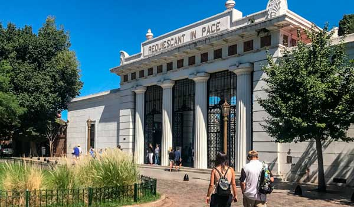
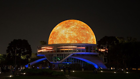

Lugares Turísticos infaltables para tu visita en Buenos Aires
Obelisco
El Obelisco de Buenos Aires es un monumento histórico, considerado un ícono de la Ciudad de Buenos
Aires, la capital de Argentina. Tiene una longitud de 67,5 metros, y de estos 63 metros son desde la
base de 7 x 7 m hasta el inicio del ápice 3,50 x 3,50mts. Culminando con una punta del estilo Roma
de unos 40 cm. Tiene una sola puerta de entrada y en su cúspide hay cuatro ventanas. Fue construido
en 1936 con motivo del cuarto centenario de la llamada primera fundación de Buenos Aires por Pedro
de Mendoza. Se encuentra ubicado en la Plaza de la República, en la intersección de las avenidas
Corrientes y 9 de Julio, en el barrio de San Nicolás en Buenos Aires.

Teatro Colón
El Teatro Colón es uno de los imperdibles del mundo de la lírica y está a la altura de La Scala de
Milán, la Ópera Garnier de París y el Royal Opera House de Londres.
Desde su primera función del 25 de mayo de 1908, en la que se presentó la ópera Aída, de Giuseppe
Verdi, actuaron los directores, cantantes y bailarines más importantes de la historia, tales como
Igor Stravinsky, Herbert von Karajan, Daniel Barenboim, Maria Callas, Luciano Pavarotti, Plácido
Domingo, Rudolf Nureyev, Julio Bocca, Paloma Herrera y Maximiliano Guerra.


Casa Rosada
La Casa Rosada es un palacio ubicado frente a la Plaza de Mayo que funciona como sede del Gobierno
Nacional. Este imponente edificio de color rosado ocupa el predio donde se erigió en 1580 el Fuerte
de Buenos Aires. Fue la residencia de virreyes españoles y luego albergó, con algunas reformas, a
las autoridades de los sucesivos gobiernos patrios. El actual edificio es el producto de la fusión
de dos construcciones anteriores: la sede presidencial y el Palacio de Correos (en la esquina de
Hipólito Yrigoyen y Balcarce).

Cabildo
Visitá el corazón de la revolución de 1810: la sede de la administración colonial, ocupa el mismo
lugar desde 1580 y es un emblema de historia viva. El Cabildo de Buenos Aires ocupa el mismo lugar
desde 1580, pero su edificio sufrió sucesivas modificaciones. Las primeras referencias de esta
emblemática construcción provienen de principios del siglo XVII. Para 1608, tenía paredes de adobe y
techo de paja. En su interior, había un salón para reuniones y otro que funcionaba como cárcel. En
1610, doscientos años antes de la Primera Junta, el techo se cubrió de tejas. Más tarde, a mediados
de siglo, le hicieron un balcón y torres de madera y barro.

Caminito
Esta calle museo es uno de los lugares más fotografiados del mundo: sus adoquines y los conventillos
de chapa, con sus paredes pintadas de distintos colores, le dan un encanto único. Caminito es uno de
los paseos más emblemáticos de la Ciudad y de los atractivos imperdibles para quienes lo visitan.
Con sus conventillos típicos de chapa de distintos colores, es también un museo a cielo abierto de
casi 150 metros de longitud. Su trazado sinuoso se debe a que sigue el cauce de un arroyo que fluyó
por allí hasta principios del siglo XX. La zona era conocida popularmente como "Puntin" (diminutivo
de "puente" en dialecto genovés ).

Cementerio de la Recoleta
El Cementerio de la Recoleta se encuentra ubicado en el exclusivo barrio de la Recoleta, que debe su
nombre a que allí se hallaba el convento de los monjes recoletos, al que también pertenecía la
vecina Basílica Nuestra Señora del Pilar (en la antigua huerta de los monjes se construyó el
cementerio).
Es el más visitado de la ciudad, por sus numerosos e imponentes mausoleos y bóvedas, pertenecientes
a muchos de los principales protagonistas de la historia argentina, como el de Eva Perón (Evita),
una de las tumbas más concurridas. Asimismo, merece una visita por su valor arquitectónico, ya que
es una muestra de los tiempos en que el país era una potencia económica emergente y las principales
familias de la ciudad competían por construir panteones esplendorosos. Muchas de las bóvedas y
mausoleos son obra de importantes arquitectos y están adornados con mármoles y esculturas; más de 90
bóvedas han sido declaradas Monumento Histórico Nacional.


Puerto Madero
Puerto Madero es uno de los cuarenta y ocho barrios en los que se divide la Ciudad Autónoma de Buenos
Aires (CABA), capital de la República Argentina. Su ubicación cercana a la zona este de la ciudad,
lo extenso de su área y su vista al río hacen que este distrito sea uno de los más valorados de
Buenos Aires.El barrio debe su nombre a Eduardo Madero, comerciante de Buenos Aires que presentó
tres proyectos para la construcción del puerto de la ciudad, el último de los cuales fue aprobado
por el entonces Presidente de la Nación Julio Argentino Roca en 1882.

Planetario
El Planetario Galileo Galilei es el espacio para la difusión y el aprendizaje del conocimiento
científico-astronómico dentro del Parque Tres de Febrero y en la Ciudad de Buenos Aires.
La Plaza Benjamín Gould fue bautizada en homenaje al astrónomo norteamericano que se hizo cargo,
entre 1871 y 1885, del Observatorio Astronómico de Córdoba, convirtiéndose en el pionero de la
astronomía observacional y de la meteorología argentina. Es en esta plaza, precisamente, donde el
Planetario comparte espacio con su lago homónimo que, durante el día, refleja sobre su espejo de
agua la conocida estructura este edificio emblemático de la Ciudad.
